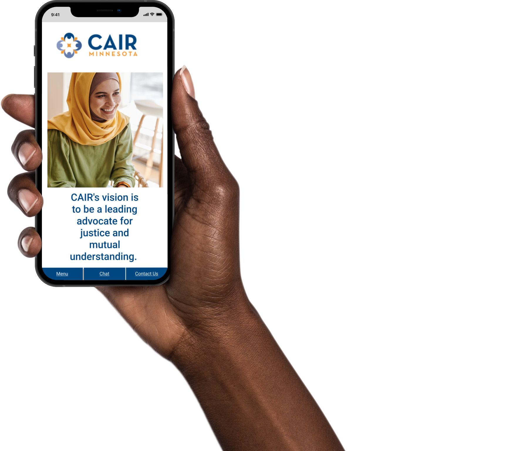
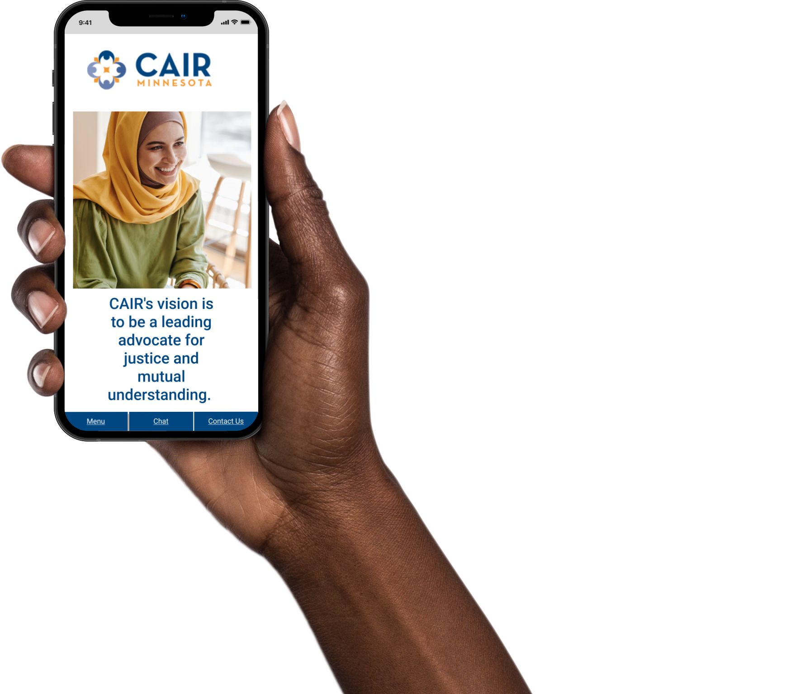
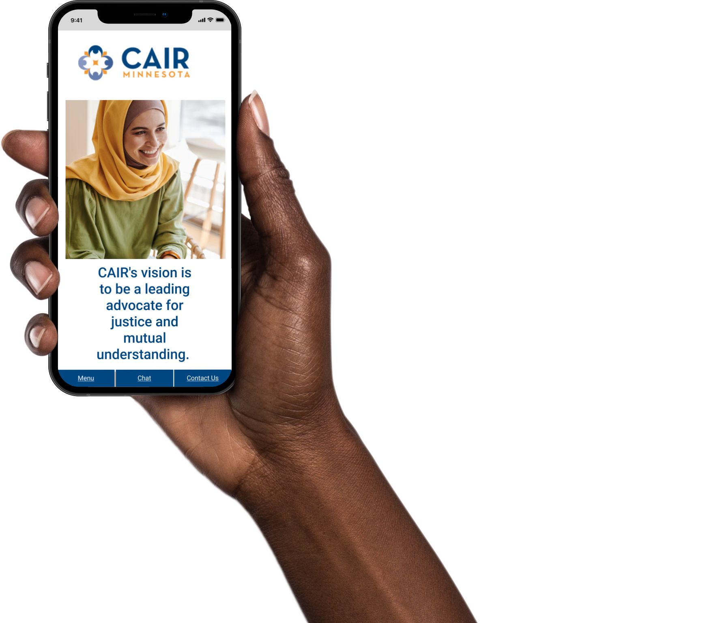

Hi-Fidelity Prototype Mockups
 


Madison Williams : UX Researcher and UI Designer
CAIR-MN is a non-profit with a vision to be a leading advocate for justice and mutual understanding of the Muslim American community and culture.
Our team collaborated with CAIR-MN's community members to create a more accessible and consistent user experience. Focal points of the project were: Creating a consistent style guide, restructuring the home page to be responsive, and simplifying the user journey.
We collected user insights through virtual interviews and surveys.
Through this research we discovered the local Muslim American community was largely unaware of CAIR-MN and the resources it provides.
Using Figma, our team created lo-fidelity prototypes for user
testing to make sure we were on the right track.
We then collected our testers comments and iterated on the
design.
Need to provide more feedback in the chat feature so users know the actions they took were working/making an impact Add breadcrumbs to improve the users sense of "direction" so they knew how they got to the page they were on and be able to retrace their steps.
Taking the information gathered from user testing we applied changes to the design to ensure a positive user experience. Throughout this effort, we applied a custom style guide that was focused on accessibility standards without changing the existing brand.
